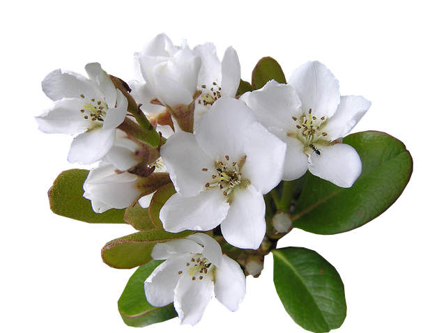
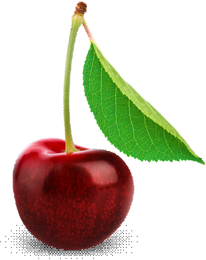
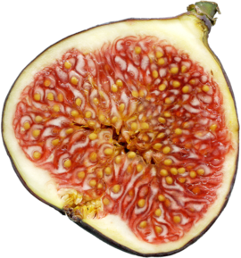

INTRODUCCIÓN
INTRODUCCIÓN
- El Proyecto Rustica consiste en dotar Valencia de un huerto ecológico experimental cuya particularidad sea que sera 100% publico.
Es decir que sera el bien de todos, al igual que un parque, jardín municipal, cancha de deporte en pleno aire ect.
- El huerto puede constituir un guion entre pasado y futuro, tradición e inovación, guardando el saber artesanal juntandolo con las
tecnologias mas recientes.
- Recordando asi la frase de Bernardo de Chartres : « Somos como enanos a los hombros de gigantes ».
EL PROYECTO
- La creación de un huerto ecológico a meta pedagógica, conducida por una asociación de voluntariados en el respecto de la naturaleza.
Nuestro proyecto es inovador en el sentido que seria una realización a orientación local de circuito corto y que ademas presenta multiples ventajas inmediatas.
El hecho de llevar a cabo un trabajo juntos, compartir momentos de complicidad en el esfuerzo común para llegar a una realización colectiva,
en ello se basa el cemento de la solidaridad.
- La juventud podra a su vez, mas adelante, transmitir esa pasión por una agricologia inteligente.
- Y porque hasta un gran viaje tuvo que empezar con un primer pequeño paso : el proyecto ayudaría
en concientizar los ciudadanos de forma tangible a los retos medioambientales de nuestra epoca.
 REALIZACIÓN
REALIZACIÓN
Ubicación
- Se realizará estudios para determinar una ubicación propicia, que trendrá en cuenta todas las normas ambientales.
- El local trendrá que corresponder a los criterios de viabilidad, seguridad y de accesibilidad a las personas descapacidas.
- Esta ubicación permitiria de "reciclar" o proteger un espacio que estaria en un estado descuidado o amenazado.
Superficie
- Sobre una superficie de 1000 m2 y mas ! (* superficie para determinar).
- Una parte al aire libre: que contará un huerto - un jardín para pasear - un taller exterior.
- Una parte construida: divida en varias salas (ver mas abajo).
Local
- Una aula de conferencia o para dar clases/cursos, baños, una tienda para poder vender productos.
- Un trastero para guardar material y herramientas.
- Parking de aceso.
finanzamiento
- Mediante el crowdfunding.
- Patrocidadores empresariales (de preferencia proveniente de empresas eticas).
- Subvenciones europeas.
- Podriamos disponer de una tienda que venderia algunos productos.
tipo de vegetación
Todo tipo de vegetación adaptada al clima de la region :
- Arboles : naranjo, higuero, olivo, limonero, pino piñonero, roble, cedro
- Huerto : tomate, judía, calabacín, hinojo, melón, pimiento, berenjena, chirivía, fresas,
mora, alcachofa, garbanzo, pepino, garrofó, haba, chufa
- Jardín : granado, violeta, rosa, jazmín, lavanda, clavel, centifolia, adelfa, agapant,
glicinia, lantana, jara, tuna, mimosa, mirto, viña…
- Plantas aromaticas : albahaca, menta, cebollino, tomillo, romero, perejil, mejorana…
- Plantas exoticas : bouganvilla, Aloe vera…
Los volontarios
Haciendo conocer el proyecto con el apoyo de la red asociativa, de los medios, y de las redes sociales;
podriamos rapidamente reunir voluntarios, lo cual nos proporcionaria el impulso participativo que requiere el proyecto.
Las personas deseando de participar podrian por ejemplo inscribirse a nuestra asociación.
OBJETIVOS
Salida escolar
- Permetiria de recibir salidas escolares a las esculas cercanas, ofreciendo para algunos alumnos un primer paso en el ambito agricola.
- Abrir la curiosidad hacia la ecología.
Cursos educativos
- Profesores, jubilados, profesionales o aficionado y todos aquellos con el conocimiento necesario podrian
impartir clases para compartir su sabiduria.
- Estos cursos podrian estar editados y subidos online (a traves de la web o de una plataforma como YouTube).
Talleres
- Nuestro taller estará a la disposición de los que se inscriben para realizar prácticas.
- En coordinación con asociaciones o la oficina del turismo abriremos horarios para que los inscritos puedan iniciarse a los trabajos de la huerta.
- En acuerdo con organismos para ofrecer talleres de reinserción a personas en dificultad social o profesional.
Posibilidad turistica
- La Villa Rustica constituirá un argumento turistico mas para Valencia.
- Los turistas tendran la posibilidad de visitar el sitio y al final se les ofrecerá pasar por nuestra tienda para compras.
- Tenemos que obtener una visibilidad turistica usando los canales como la Oficina del turismo y las redes sociales.
- Conexión con los hoteles de la región.
Ferias, eventos, conferencias
- Organizaremos ferias, eventos, mercados tematicos para promovernos y generar actividad.
- Conferencias, charlas sobre topicos como mla ecología, las plantas, la responsabilidad ciudadana.
Energias sostenibles
- El proyecto es ecológico y dispondrá de las ultimas innovaciones tecnologicas : panel solar,
eolina, recuperador de agua de lluvia, compost y otras tecnologías.
- Una colaboración con las empresas locales del sector tecnológico (asi podran probar sus innovaciones).
Proyecto piloto para otras ciudades
- El proyecto realizado podrá servir de modelo para otras ciudades europeas o internacionales.
- Las diferentes redes sociales apoyaran a dar visibilidad que Valencia ofrece al medioambiente.
- La realización de un pequeño documentario "behind the scenes" mostrando la evolución de la construcción del proyecto publicado en YouTube.
ARQUITECTURA Y TRADICIÓN
Concepto
- Seleccionaremos los mejores arquitectos, diseñadores, artistas competentes para el proyecto.
- Nuestra huerto ecológico tiene que seguir en adecuación con su espíritu con su imagen, tiene que estar construido con materiales ecológicos (madera, piedra o cosas del estilo).
- Si tenemos olivos, seria una buena idea contar en el patio de un lagar, asi haremos nuestro proprio aceite de oliva.
Decoración
- La decoración hecha por artistas tiene que guardar una coherencia global con todo el resto del proyecto.
- Algunos objetos antiguos vendran completar la decoración para darle un toque auténtico.
- Mosaicos.
- Promover la cultura, mediante los personajes ilustres que hicieron la reputación de la península:
- Pintores : Sorolla (y otros).
- Escritores : Blasco Ibañez (y otros).
- Esculptores : Mariano Benlliure (y otros).